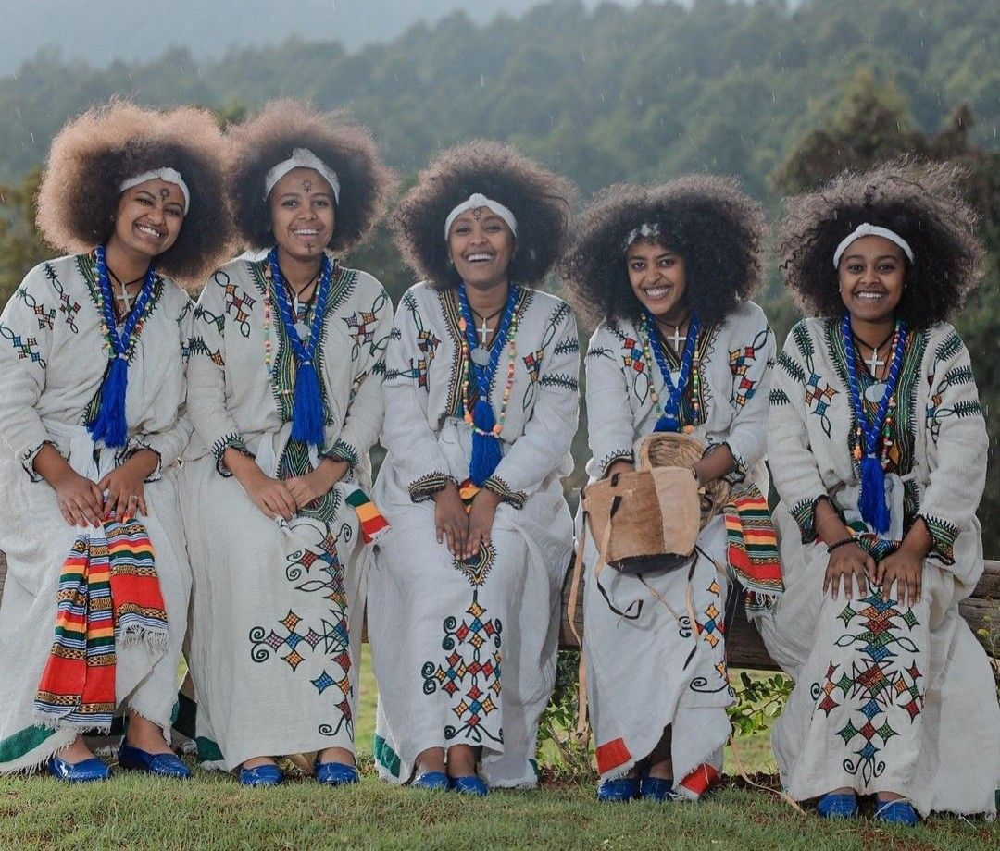
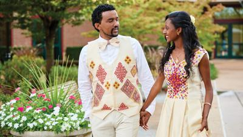
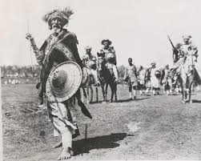

Community Gatherings
Eskista is more than just a dance; it's a communal expression of joy, unity, and identity. It plays a crucial role in Ethiopian social gatherings, bringing people together to celebrate life's significant moments.
Weddings and Celebrations
At the heart of Ethiopian weddings and celebrations, Eskista allows individuals to express their happiness and social bonds. The dance fosters a deep sense of community and shared culture.
Cultural Identity
Eskista is a powerful symbol of Ethiopian cultural identity. Through its movements, the dance tells stories of history, values, and traditions, connecting the younger generation with their heritage.
